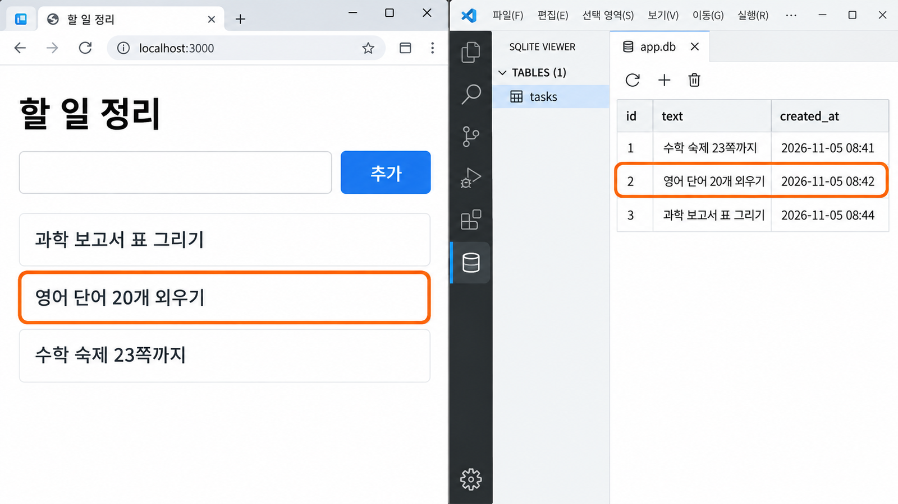

API와 DB
연결하기连接 API
与数据库
내 서비스의 버튼 하나가 다시 켜도 기억하게 합니다.先让 Codex 在计划书里写好工作计划，读过再进行，
让自己服务的一个按钮重新打开也能记住。
오늘 끝나면 내 버튼 하나가 답하고, 기억한다今天结束时，自己的一个按钮会作答，也会记住
10-1에서 내 프로젝트를 Next.js로 변환했습니다. 오늘은 Codex에게 내 서비스가 기억할 표를 만들게 하고, 내 버튼 하나가 API라는 창구로 그 표에 기록을 남기게 한 뒤, SQLite Viewer로 직접 봅니다. 고치는 일은 AI가 하지만, AI가 내 약속과 다르게 만들면 알아챌 사람은 여러분뿐입니다. 그래서 오늘도 한 번에 시키지 않고, Codex가 계획서에 먼저 쓰게 한 뒤 여러분이 읽고 진행하도록 단계를 나눕니다.10-1 把自己的项目转换成了 Next.js。今天先让 Codex 建好自己服务要记住的表，再让自己的一个按钮通过 API 这个窗口把记录留进那张表，再用 SQLite Viewer 亲眼看。改的事由 AI 来做，但 AI 做得和约定不一样时，能发现的只有大家自己。所以今天也不一次全交给它，而是先让 Codex 写进计划书，大家读过再进行，分步骤来。
| 단계步骤 | AI가 하는 일AI 做的事 | 여러분이 확인할 것大家要确认的 |
|---|---|---|
| ①① | 계획서에 쓴다 · docs를 읽고 API·저장 작업 계획을 계획서 5항 아래에 쓴다写进计划书 · 读 docs，把 API·保存的工作计划写在计划书第 5 项下面 | 약속표 · 계획의 표와 맞는가是否符合约定表 · 计划里的表 |
| ②② | 계획서대로 진행 · 적힌 대로 코드를 고친다照计划书进行 · 按写好的改代码 | 정상 입력과 잘못된 입력에서 화면이 약속대로 바뀌는가正常输入和错误输入时，画面是否按约定变化 |
| ③③ | —— | 화면 · SQLite Viewer · 껐다 켜기 세 번 확인画面 · SQLite Viewer · 关了再开，确认三次 |
| ④④ | 계획서 → 진행 · 달라진 곳의 가장 작은 수정을 계획서에 쓰고, 읽은 뒤 고친다计划书 → 进行 · 把出偏差处的最小修改写进计划书，读过后再改 | 같은 값으로 다시 해서 고쳐졌는가用同样的值再做一遍，是否改好了 |
API는 서비스 안의 약속된 창구다API 是服务里约定好的窗口 핵심核心
버튼과 결과 사이에는 눈에 보이지 않는 한 걸음이 있습니다. 화면이 서비스에 종이 한 장(요청)을 건네고, 서비스가 처리한 뒤 답이 적힌 종이(응답)를 돌려줍니다. 종이를 아무 데로나 넣지 않고 정해진 틈으로 넣듯, 화면이 기능에게 일을 부탁하는 정해진 창구를 API라고 부릅니다. 오늘은 내 서비스에 이 창구를 하나 만듭니다.按钮和结果之间，还有一步是看不见的：画面递给服务一张纸（请求），服务处理后递回一张写着答复的纸（响应）。就像纸不能随便塞、要从规定的缝里递进去一样，画面请功能办事的规定窗口叫 API。今天就给自己的服务做一个这样的窗口。

| 말词 | 뜻意思 |
|---|---|
| APIAPI | 화면과 기능이 부탁하고 답하는 약속된 창구. 내 프로젝트에서는 app/api/…/route.js画面和功能互相请求、答复的约定好的窗口。在自己的项目里是 app/api/…/route.js |
| 요청请求 | 화면이 창구에 건네는 것 — 사용자가 입력하거나 고른 값画面递给窗口的东西 — 用户输入或选择的值 |
| 응답响应 | 창구가 돌려주는 것 — 성공했는지, 화면에 보여 줄 결과나 고칠 방법窗口送回的东西 — 是否成功，画面上要显示的结果或改正的方法 |
서비스를 켜고 Codex 창을 연다 — 시작 상태를 확인한다启动服务，打开 Codex 窗口 — 确认起始状态 실습实践
오늘은 서비스를 켜 둔 채로 AI와 이야기합니다. 서비스는 10-1처럼 Codex에게 켜 달라고 하고, 안 되면 터미널에서 직접 켭니다. 터미널에서 켰다면 그 터미널은 서비스가 쓰고 있으니 거기에는 아무것도 치지 않습니다. AI와의 대화는 Codex 창에서 합니다.今天要在服务开着的状态下和 AI 对话。服务像 10-1 那样请 Codex 启动，不行就在终端里自己启动。如果是在终端里启动的，那个终端正被服务占着，什么都别往里输。和 AI 的对话在 Codex 窗口里进行。
- VS Code에서 평소처럼 내 프로젝트 폴더를 연다. 탐색기의
docs안에PRD.md·09_development_plan.md·mockup이 있는지 본다.在 VS Code 里像平时一样打开自己的项目文件夹。看资源管理器里docs中有没有PRD.md·09_development_plan.md·mockup。 - Codex에 「서비스를 켜 줘」를 보낸다.
npm run dev를 샌드박스 밖에서 실행하겠다는 카드가 뜨면 「한 번만 허용」.localhost:3000에서 내 화면이 보이는지 본다. 안 열리면 터미널에npm run dev를 직접 입력한다.给 Codex 发“서비스를 켜 줘”（启动服务）。出现要在沙盒外执行npm run dev的卡片就点“한 번만 허용”。在localhost:3000看是否出现自己的画面。打不开就在终端里自己输入npm run dev。 - 편집기 창 오른쪽 위의 Codex 단추를 눌러 오른쪽에 Codex 창을 연다. 닫혀 있으면
Ctrl+Alt+B로 오른쪽 사이드바를 연다.点编辑器窗口右上角的 Codex 按钮，在右侧打开 Codex 窗口。关着的话按Ctrl+Alt+B打开右侧边栏。 - Codex 입력칸 아래 권한이 승인 요청 그대로인지 본다.
docs\09_development_plan.md(계획서)를Ctrl+Shift+V로 열어 둔다.AGENTS.md맨 아래에 10-1에서 더한 「## 계획서에 먼저 쓴다」가 있는지 본다.看 Codex 输入框下面的权限是否保持 승인 요청（请求批准）。用Ctrl+Shift+V打开docs\09_development_plan.md（计划书）。看AGENTS.md最下面有没有 10-1 加上的“## 계획서에 먼저 쓴다”。
아직 아무것도 고치지 않았는데 안 열리면 환경 문제입니다. AI에게 고치게 하지 말고 손을 듭니다. 10-1의 「막힐 때」를 먼저 봅니다.还什么都没改就打不开，那是环境问题。不要让 AI 去改，举手。先看 10-1 的“卡住时”。
오늘 처음으로 AI가 코드를 고친다 — 계획서에 먼저 쓰게 한 뒤에만今天 AI 第一次改代码 — 只在先写进计划书之后 핵심核心
10-1에서 AGENTS.md에 「계획서에 먼저 쓴다」 규칙을 더했습니다. 오늘 처음으로 Codex가 코드를 고치므로, 이 규칙대로 계획서 5항 아래에 작업 계획을 먼저 씁니다.10-1 在 AGENTS.md 加了“先写进计划书”的规则。今天 Codex 第一次改代码，会照这条规则先在计划书第 5 项下写工作计划。
docs와 코드를 읽고 계획서 5항 아래에 어떻게 고칠지 적는다读docs和代码，在计划书第 5 项下面写打算怎么改- 계획서 말고는 파일을 고치지 않는다除了计划书，不改别的文件
- 요청 ① · 요청 ③을 이렇게 보낸다请求 ① · 请求 ③ 这样发
- 계획서에 적힌 대로 파일을 고친다按计划书里写的修改文件
- 새 패키지 설치도 여기서 한다安装新包也在这里做
- 「계획서대로 진행해」만 보낸다只发“계획서대로 진행해”
- 「…하려고 해. 작업 계획을 계획서 5항 아래에 적고 멈춰 줘」를 보낸다.发“…하려고 해. 작업 계획을 계획서 5항 아래에 적고 멈춰 줘”（我想做……，把工作计划写在计划书第 5 项下面，然后停下）。
- 계획서를
Ctrl+Shift+V로 열어 약속표 · 계획과 대 본다. 다르면 「○○를 ___로 고쳐 적어 줘」.用Ctrl+Shift+V打开计划书，和约定表 · 计划对照。不一样就发“○○를 ___로 고쳐 적어 줘”（把○○改成___再写）。 - 맞으면 「계획서대로 진행해」를 보낸다.对了就发“계획서대로 진행해”。
- 고친 뒤 화면에서 확인하고, 작업 계획의 상태가 「완료」로 바뀌었는지 본다. 바꾸거나 거절한 것은 7항에 직접 쓴다.改完后在画面上确认，看工作计划的状态是否变成“완료”（完成）。我改动或拒绝的，写进第 7 项。
Codex의 첫 코드 작업 — 내 서비스가 기억할 표를 만든다Codex 的第一个代码任务 — 建好自己服务要记住的表 실습实践
오늘 Codex의 첫 코드 작업은 내 서비스가 기억할 표를 만드는 일입니다. 무엇을 기억할지는 9-2 계획 3항 「기억할 기록과 표」에 이미 적었습니다. 방금 본 순서대로 Codex는 계획서 5항 아래에 작업 계획을 먼저 씁니다. 계획서를 Ctrl+Shift+V로 열어 표 이름과 열이 3항과 같은지 대 보고, 맞으면 「계획서대로 진행해」, 다르면 「열은 ___로 고쳐 적어 줘」를 보냅니다.今天 Codex 的第一个代码任务，是建好自己服务要记住的表。要记住什么，9-2 计划第 3 项“기억할 기록과 표”已经写好了。按刚才看的顺序，Codex 会先在计划书第 5 项下面写工作计划。用 Ctrl+Shift+V 打开计划书，对照表名和列是否和第 3 项一样，对了就发“계획서대로 진행해”，不对就发“열은 ___로 고쳐 적어 줘”（列改成___再写）。
docs/09_development_plan.md 3항 「기억할 기록과 표」를 읽어 줘. 내 서비스가 기억할 표를 만들고 싶어. - 저장은 Node에 들어 있는 SQLite(node:sqlite)로 하고, 기록 파일은 data/app.db 하나로 해 줘. 새 패키지는 설치하지 마. - 연결과 표 만들기는 lib/db.js 한 파일에 두고, 표 이름과 열은 3항과 같게 해 줘. - 개인정보(실명 · 연락처) 열은 만들지 마. - 화면과 API는 아직 고치지 마. 이 뒤에 한다. - 진행할 때 data/app.db에 표가 실제로 생기도록 한 번 실행해 줘. 먼저 계획서 5항 아래에 작업 계획을 적고 멈춰 줘. 표 이름 · 열 이름 · 각 열의 뜻도 쉬운 말로 적어 줘.
请读 docs/09_development_plan.md 第 3 项“기억할 기록과 표”（要记住的记录和表）。
我想建好自己服务要记住的表。
- 保存用 Node 自带的 SQLite（node:sqlite），记录文件只用 data/app.db 一个。不要安装新包。
- 连接和建表都放在 lib/db.js 一个文件里，表名和列要和第 3 项一样。
- 不要建个人信息（真实姓名 · 联系方式）的列。
- 画面和 API 先不要改，后面再做。
- 进行时运行一次，让 data/app.db 里真的建好表。
请先在计划书第 5 项下面写好工作计划，然后停下。表名 · 列名 · 每一列的意思也用简单的话写上。lib\db.js를 열고Ctrl+F로CREATE TABLE을 찾는다. 내 표 이름과 열이 3항과 같은가?打开lib\db.js，用Ctrl+F找CREATE TABLE。自己的表名和列和第 3 项一样吗？- 탐색기의
data폴더에app.db가 생겼는가? 계획서의 작업 상태가 「완료」인가?资源管理器的data文件夹里有app.db了吗？计划书里这项工作的状态是“完成”吗？
방금 만든 내 표는 SQLite 파일 하나에 들어 있다刚建好的自己的表，就在一个 SQLite 文件里 (이어서)（续）
방금 Codex가 lib/db.js에 내 서비스의 표를 만들었습니다. 이 표와 앞으로 쌓일 기록은 모두 data/app.db 파일 하나에 들어 있습니다. 화면에 보이는 것만으로는 기억이 아닙니다. 이 파일에 적혀 있어야 다시 켜도 남습니다.刚才 Codex 在 lib/db.js 里建好了自己服务的表。这张表和以后积累的记录，都在 data/app.db 这一个文件里。画面上看得到，还不等于记住了；写进这个文件，重新启动后才会还在。
- 현상现象
- 휴대전화의 메모 앱은 회원 가입을 하지 않아도 적은 것이 남아 있습니다. 앱 안 어딘가의 파일에 적어 두기 때문입니다.手机里的备忘录 App 不用注册，写下的东西也会留着。因为它记在了 App 里某个地方的文件中。
- 쉬운 설명通俗说法
- 외부 데이터베이스 계정 없이, 파일 하나에 표 · 행 · 열로 기록을 적어 두는 방법입니다.不需要外部数据库账号，用一个文件按表 · 行 · 列记下记录的方法。
- 정확한 정의准确定义
- 별도의 서버 없이 파일 하나 안에 표 · 행 · 열 구조로 데이터를 저장하고 꺼내 보는 관계형 데이터베이스.不需要另外的服务器，在一个文件里按表 · 行 · 列的结构保存和读取数据的关系型数据库。
- 경계边界
- 7-1의 표 · 행 · 열 · 기본키는 그대로입니다. 다른 점은 위치입니다. 외부 서비스에 접속하지 않고 프로젝트 안의
data\app.db를 씁니다.7-1 的表 · 行 · 列 · 主键都一样。不同的是位置：不连接外部服务，而是用项目里的data\app.db。 - 문장 속 사용句中用法
- “내 서비스의 기록은 SQLite 파일
data\app.db에 저장된다.”“自己服务的记录保存在 SQLite 文件data\app.db里。”
Viewer로 내 표를 연다 — 아직 비어 있다用 Viewer 打开自己的表 — 现在还是空的 (이어서)（续）
10-1에서 설치한 SQLite Viewer로 data/app.db를 엽니다. 왼쪽에 표 이름들이, 오른쪽에 열과 행이 나옵니다. 아래 그림은 예시 서비스(할 일 정리)의 tasks 표를 연 모습입니다. 내 표도 같은 방법으로 엽니다. 오늘 API를 연결하면 이 빈 표에 행이 생깁니다.用 10-1 安装的 SQLite Viewer 打开 data/app.db。左边是各个表名，右边是列和行。下图是打开示例服务（待办整理）的 tasks 表的样子，自己的表也用同样的方法打开。今天接上 API 后，这张空表里就会出现行。

- 탐색기에서
data폴더를 펼치고app.db를 누른다. 없으면 앞 쪽의 표 만들기가 덜 된 것이다. Codex에 「lib/db.js의 표가 data/app.db에 생기게 한 번 실행해 줘」를 보낸다.在资源管理器里展开data文件夹，点app.db。没有的话，是前一页的建表没做完。给 Codex 发“lib/db.js의 표가 data/app.db에 생기게 한 번 실행해 줘”（运行一次，让 lib/db.js 的表在 data/app.db 里建出来）。 - 왼쪽에서 내 표 이름을 누른다. 열 이름이 개발 계획 3항 「기억할 기록과 표」와 같은지 본다. 행은 아직 0개다.在左边点自己的表名。看列名和开发计划第 3 项“기억할 기록과 표”是否一样。现在还是 0 行。
약속표 파일을 만들고, 내 버튼 하나의 약속을 적는다建好约定表文件，写下自己一个按钮的约定 실습实践
AI에게 맡기기 전에 내 서비스의 핵심 행동 하나를 API 약속으로 적습니다. 적을 곳인 약속표 docs\10_api_promise.md를 먼저 만듭니다. 아래 요청을 읽고 보내면 Codex가 빈 표만 있는 약속표를 만듭니다. 내용은 여러분이 채웁니다.交给 AI 之前，先把自己服务的一个核心动作写成 API 约定。先建好要写的地方 — 约定表 docs\10_api_promise.md。读完下面的请求再发，Codex 会建一个只有空表的约定表。内容由大家来填。
docs 폴더에 10_api_promise.md(API 약속표)를 만들어 줘. 문서만 만드는 일이니 계획서 없이 바로 만들어. 맨 위 제목은 「# API 약속표」, 그 아래 네 칸을 표로 만들고 내용은 비워 둬. 채우는 건 내가 한다. ## 1. 핵심 행동의 약속 — 사용자의 핵심 행동 · 요청 주소 · 방법(GET/POST) · 보낼 데이터 · 성공하면 받을 데이터 · 실패하면 받을 안내 · 응답 뒤 화면에 보여 줄 것 ## 2. 실행해 본 결과 — 정상 입력 · 잘못된 입력 줄마다 보낸 데이터 · 받은 응답 · 화면에 보인 것 ## 3. 저장과 다시 보기 — 저장할 핵심 기록 · 저장하는 요청 · 다시 불러오는 요청 · 표 이름과 열 · 화면에서 다시 보는 곳 ## 4. 세 번 확인 — 화면 · SQLite Viewer · 껐다 켜기 줄마다 본 것 · 판정(통과 / 실패)
请在 docs 文件夹里新建 10_api_promise.md（API 约定表）。只是建文档，不用写计划书，直接建。 最上面的标题是“# API 约定表”，下面把四个部分做成表，内容空着。由我来填。 ## 1. 核心动作的约定 — 用户的核心动作 · 请求地址 · 方法（GET/POST）· 发送的数据 · 成功时收回的数据 · 失败时收回的提示 · 响应后画面显示的 ## 2. 实际运行的结果 — 正常输入 · 错误输入，每行写发送的数据 · 收到的响应 · 画面上看到的 ## 3. 保存与再次查看 — 要保存的核心记录 · 保存的请求 · 重新读取的请求 · 表名和列 · 画面上再次查看的地方 ## 4. 确认三次 — 画面 · SQLite Viewer · 关了再开，每行写看到的 · 判定（通过 / 失败）
1항에 내 버튼 하나의 API 약속을, 3항에 저장할 기록을 적는다第 1 项写一个按钮的 API 约定，第 3 项写要保存的记录 (이어서)（续）
약속표를 Ctrl+Shift+V로 열어 1. 핵심 행동의 약속을 채웁니다. 요청 주소와 방법은 비워 두거나 짐작만 적어도 됩니다. 요청 ①에서 AI의 제안을 확인한 뒤 고칩니다. 3. 저장과 다시 보기의 기록 · 표 이름과 열 · 다시 보는 곳은 9회 계획 3항과 3절에서 만든 내 표를 보고 옮겨 적습니다.用 Ctrl+Shift+V 打开约定表，填好 1. 核心动作的约定。请求地址和方法可以空着，或者只写个猜测，等请求 ① 确认过 AI 的提议后再改。3. 保存与再次查看里的记录 · 表名和列 · 再次查看的地方，看着第 9 次课计划第 3 项和第 3 节建好的自己的表抄过来。
| 1항의 칸第 1 项的格 | 이렇게 찾는다这样找 |
|---|---|
| 사용자의 핵심 행동用户的核心动作 | 09_development_plan.md 2항 대표 흐름에서 버튼을 누르는 단계09_development_plan.md 第 2 项代表流程里按按钮的那一步 |
| 보낼 데이터发送的数据 | 그 단계에서 사용자가 입력하거나 고른 것那一步里用户输入或选择的东西 |
| 성공하면 받을 데이터成功时收回的数据 | 그다음 단계에서 화면에 보여야 할 결과下一步画面上要显示的结果 |
| 실패하면 받을 안내失败时收回的提示 | 4항 예외 흐름의 안내 문장第 4 项例外流程里的提示句 |
| 응답 뒤 화면에 보여 줄 것响应后画面显示的 | 결과가 어디에 어떻게 나타나는지结果在哪里、以什么样子出现 |
버튼이 여러 개인 서비스도 오늘은 핵심 결과를 만드는 버튼 하나만 적습니다. 나머지 기능은 개발 계획 5항의 순서대로 11회부터 붙입니다.就算服务里有好几个按钮，今天也只写产生核心结果的那一个。其余功能按开发计划第 5 项的顺序，从第 11 次课起再加。
요청 ① 계획서에 작업 계획을 먼저 쓰게 한다请求 ① 先让它把工作计划写进计划书 핵심核心
첫 요청은 코드를 고치지 말고 계획서에 먼저 쓰게 합니다. AI는 API와 저장을 어떻게 연결할지 계획서 5항 아래에 적고 멈춥니다. 빈칸 세 개는 약속표 1·3항과 개발 계획 3항에서 옮겨 적습니다. AI는 화면에서 흉내였던 저장을 진짜 저장으로 바꾸는 방법까지 적습니다.第一个请求先不改代码，让它先写进计划书。AI 会把怎样接上 API 和保存写在计划书第 5 项下面，然后停下。三个空格从约定表第 1·3 项和开发计划第 3 项里抄过来。AI 还会写上怎样把画面里模拟的保存换成真正的保存。
docs 폴더의 PRD.md, 09_development_plan.md, 10_api_promise.md를 읽어 줘. 내 서비스의 핵심 행동 하나를 API와 SQLite 저장으로 연결하려고 해. 코드는 아직 고치지 말고, 작업 계획을 계획서(docs/09_development_plan.md) 5항 아래에 적고 멈춰 줘. - 핵심 행동: ___ - 저장할 핵심 기록: ___ - 기록을 다시 보는 곳: ___ - 화면은 10-1에서 목업을 변환한 내 화면(app)이야. 디자인은 그대로 두고, 흉내로 저장하던 곳만 API로 바꿔 줘. - 표는 3절에서 lib/db.js에 만든 내 표를 써. 새 표를 만들지 마. 작업 계획에는 다음을 한 줄씩 쉽게 적어 줘. 1. 어떤 화면 행동이 요청을 보내는지 2. 저장하는 요청과 다시 불러오는 요청의 주소와 방법(GET/POST) 3. 보낼 데이터와 성공·실패 응답 4. 표 이름과 열 이름 (09_development_plan.md 3항 「기억할 기록과 표」와 같게) 5. 응답 뒤 화면이 어떻게 바뀌고, 저장된 기록이 어디에 다시 보이는지 6. 고칠 파일과 각 파일의 역할 7. 화면에서 흉내였던 곳(localStorage 저장 · 미리 넣은 예시 값)과 그것을 바꿀 요청 로그인·파일 올리기·디자인 바꾸기·다른 기능은 아직 넣지 마. 11회에 한다.
请读 docs 文件夹里的 PRD.md、09_development_plan.md、10_api_promise.md。
我想把自己服务的一个核心动作接成 API 和 SQLite 保存。
先不要改代码，把工作计划写在计划书（docs/09_development_plan.md）第 5 项下面，然后停下。
- 核心动作：___
- 要保存的核心记录：___
- 再次查看记录的地方：___
- 画面是 10-1 由模型转换来的我的画面（app）。设计保持不变，只把用模拟方式保存的地方换成 API。
- 表就用第 3 节在 lib/db.js 里建好的我的表。不要新建表。
工作计划里请把下面几项一行一行用简单的话写上。
1. 哪个画面动作发出请求
2. 保存的请求和重新读取的请求，各自的地址和方法（GET/POST）
3. 发送的数据，以及成功·失败的响应
4. 表名和列名（和 09_development_plan.md 第 3 项“기억할 기록과 표”一样）
5. 响应之后画面怎么变化，保存的记录在哪里再次显示
6. 要改的文件，以及每个文件的作用
7. 画面里哪些地方是模拟的（localStorage 保存 · 预先放的示例值），要换成什么请求
登录、上传文件、改设计、其他功能现在都不要加。第 11 次课再做。AI의 계획을 약속표 · 계획의 표와 한 줄씩 대 본다把 AI 的计划和约定表 · 计划里的表一行一行对照
AI가 계획서에 작업 계획을 쓰면, 계획서를 Ctrl+Shift+V로 열어 아래 질문으로 확인합니다. 하나라도 「아니요」면 그 줄만 「고쳐 적어 줘」라고 보냅니다. 모두 「예」이면 작업 계획의 요청 주소와 방법을 10_api_promise.md의 1·3항 빈칸에 여러분이 직접 적습니다.AI 把工作计划写进计划书后，用 Ctrl+Shift+V 打开计划书，用下面的问题确认。只要有一个“否”，就只针对那一行发“고쳐 적어 줘”（改好再写）。全部“是”的话，就把工作计划里的请求地址和方法亲手填进 10_api_promise.md 第 1·3 项的空格。
| 확인할 것要确认的 | 아니요라면如果是“否” |
|---|---|
| 요청을 보내는 행동이 계획 2항 대표 흐름의 그 단계와 같은가?发出请求的动作，和计划第 2 项代表流程里的那一步一样吗？ | 「핵심 행동은 ___이야. 그 버튼으로 고쳐 적어 줘」“核心动作是 ___。请按那个按钮改好再写” |
| 표 이름과 열 이름이 계획 3항 「기억할 기록과 표」와 같은가?表名和列名，和计划第 3 项的“기억할 기록과 표”一样吗？ | 「열은 ___ · ___ · ___로 맞춰 고쳐 적어 줘」“列请按 ___ · ___ · ___ 改好再写” |
| 보내는 데이터가 핵심 기능에 필요한 것뿐인가? 이름 · 연락처 같은 개인정보가 없는가?发送的数据只有核心功能需要的吗？没有姓名、联系方式这类个人信息吗？ | 「___은 빼고 고쳐 적어 줘」“去掉 ___ 改好再写” |
| 실패 응답이 무엇을 고칠지 알려 주는가?失败响应会告诉用户要改什么吗？ | 「실패하면 ___라고 안내하게 해 줘」“失败时请提示 ___” |
고칠 파일이 app 안의 화면 · API와 lib/db.js뿐인가?要改的文件只有 app 里的画面 · API 和 lib/db.js吗？ | 「package.json은 고치지 마. 로그인 같은 다른 기능은 11회에 해」“不要改 package.json。登录这类其他功能第 11 次课再做” |
저장하는 요청과 다시 불러오는 요청의 주소 · 방법, 그리고 표 이름을 짝에게 내 말로 말해 봅니다. 말이 막히면 「___이 무슨 뜻인지 쉽게 다시 설명해 줘」를 보냅니다.把保存的请求和重新读取的请求各自的地址 · 方法，还有表名，用自己的话讲给同桌听。说不下去，就发“请用简单的话再解释一下 ___ 是什么意思”。
요청 ② 「계획서대로 진행해」 — 그리고 직접 눌러 본다请求 ② “照计划书进行” — 然后亲手按一下 실습实践
계획서의 작업 계획이 맞으면 아래 요청을 보냅니다. AI가 계획서대로 파일을 고치는 동안 기다리고, 끝나면 무엇을 바꿨는지 Codex 창에서 읽습니다. 서비스는 터미널에서 계속 켜져 있어서, 고친 내용이 브라우저에 저절로 반영됩니다. 이제 내 손으로 눌러 봅니다.计划书里的工作计划对了，就发下面的请求。AI 照计划书改文件时等着，改完后在 Codex 窗口里读它改了什么。服务在终端里一直开着，改动会自动反映到浏览器上。现在亲手按一下。
계획서대로 진행해. 계획서 5항의 이번 작업 계획대로만 고쳐 줘. 사용자가 입력한 값은 SQL 문장에 바로 이어 붙이지 말고 ? 자리로 넣어 줘. 다 고치면 작업 계획의 상태를 완료로 바꾸고, 고친 파일 이름과 내가 화면에서 확인할 행동 두 가지(정상 입력 · 잘못된 입력)를 알려 줘.
계획서대로 진행해（照计划书进行）。
只按计划书第 5 项里这次的工作计划修改。用户输入的值不要直接拼进 SQL 语句，要用 ? 占位符放进去。
改完后把工作计划的状态改成完成，再告诉我改了哪些文件，以及我要在画面上确认的两个动作（正常输入 · 错误输入）。- 브라우저에서
localhost:3000을 새로고침한다. 내 화면이 그대로 보이는가?在浏览器里刷新localhost:3000。自己的画面还原样显示吗？ - 정상 입력으로 핵심 행동을 한다. 계획 2항 대표 흐름의 다음 단계 화면이 나오는가?用正常输入做核心动作。出现计划第 2 项代表流程里下一步的画面了吗？
- 잘못된 입력(빈칸 등)으로 같은 행동을 한다. 계획 4항 예외 흐름의 안내가 나오는가?用错误输入（空着等）做同样的动作。出现计划第 4 项例外流程的提示了吗？
「test」나 「ㅁㄴㅇ」 같은 값은 뒤에서 SQLite Viewer와 대 볼 때 구별하기 어렵습니다. 내 서비스를 실제로 쓰는 사용자처럼 값을 넣습니다.“test”或乱打的字，之后在 SQLite Viewer 里对照时很难分辨。要像真正使用这个服务的用户那样输入。
본 것을 약속표 2항에 적는다把看到的写进约定表第 2 项 (이어서)（续）
방금 두 번 눌러 본 결과를 10_api_promise.md의 2. 실행해 본 결과에 적습니다. 보낸 데이터와 화면에 보인 것은 여러분이 직접 본 대로 씁니다. 받은 응답은 AI에게 물어봐도 됩니다. 이 표는 12회 테스트 기록의 연습입니다.把刚才按两次的结果写进 10_api_promise.md 的 2. 실행해 본 결과（试运行的结果）。发送的数据和画面上看到的，照自己亲眼看到的写。收到的响应可以问 AI。这张表是第 12 次课测试记录的练习。
| 시도尝试 | 보낸 데이터发送的数据 | 받은 응답收到的响应 | 화면에 보인 것画面上看到的 |
|---|---|---|---|
| 정상 입력 (예)正常输入（例） | 할 일: 과학 보고서 표 그리기待办：科学报告画表 | ok: true, 추가했습니다.ok: true，已添加。 | 목록 맨 위에 「과학 보고서 표 그리기」列表最上面出现“科学报告画表” |
| 잘못된 입력 (예)错误输入（例） | 할 일: (빈칸)待办：（空） | ok: false, 할 일을 입력하세요.ok: false，请输入待办。 | 주황 상자에 안내 · 목록은 그대로橙色框里显示提示 · 列表不变 |
브라우저에서 F12를 누르고 네트워크 탭을 연 뒤 버튼을 누르면, 요청 하나가 줄로 생깁니다. 그 줄을 누르면 응답의 JSON이 보입니다. 필수는 아닙니다.在浏览器里按 F12，打开 네트워크（网络）标签再按按钮，会多出一行请求。点这一行就能看到响应的 JSON。这一步不是必须的。
① 화면 · ② SQLite Viewer에서 같은 기록을 찾는다① 画面 · ② 在 SQLite Viewer 里找到同一条记录 실습实践
저장이 됐다고 말하려면 세 번 확인합니다. 첫째는 화면입니다. 기록이 다시 보이는 자리까지 따라가 봅니다. 둘째는 파일입니다. 저장하는 순간 data 폴더의 app.db에 행이 적히므로, 10-1에서 설치한 SQLite Viewer로 열어 같은 값을 찾습니다.要说保存成功了，得确认三次。第一次是画面：一直跟到记录再次显示的位置。第二次是文件：保存的那一刻，行会写进 data 文件夹里的 app.db，用 10-1 安装的 SQLite Viewer 打开，找到同样的值。
- 방금 정상 입력으로 남긴 값이 내 흐름에서 기록을 다시 보는 자리(목록 · 최근 기록 등)에 나타나는지 본다.看刚才用正常输入留下的值，有没有出现在我的流程里再次查看记录的位置（列表 · 最近记录等）。
F5로 새로고침해도 그대로 있는지 본다. 잘못된 입력 뒤에는 기록이 늘지 않았는지 본다.按F5刷新后看是否还在。看错误输入之后，记录有没有增加。
- VS Code 탐색기에서
data폴더를 펼치고app.db를 누른다.在 VS Code 资源管理器里展开data文件夹，点app.db。 - 왼쪽에서 내 표 이름을 누른다. 방금 남긴 값이 행으로 있는지, 행의 개수가 남긴 횟수와 같은지 본다.在左边点自己的表名。看刚才留下的值有没有成为一行，行数和留下的次数是否一样。
Win+←·Win+→로 브라우저와 VS Code를 나란히 놓고 값을 한 줄씩 대 본다.用Win+←·Win+→把浏览器和 VS Code 并排，逐行对照值。
Viewer에서는 행을 고치거나 지우지 않습니다. 값이 틀렸으면 화면에서 다시 하거나, 8절처럼 처음 달라진 단계를 찾습니다.在 Viewer 里不改也不删行。值不对的话，就在画面上重做，或者像第 8 节那样找最先出偏差的那一步。
① 화면 · ② SQLite Viewer에서 같은 기록을 찾는다① 画面 · ② 在 SQLite Viewer 里找到同一条记录 (이어서)（续）
아래 화면은 예시 「할 일 정리」를 나란히 놓은 모습입니다. 왼쪽 브라우저의 한 줄과 오른쪽 Viewer의 한 행이 같은 값이면 저장이 제대로 된 것입니다. 내 서비스도 같은 방법으로 대 보고, 아래 질문에 답합니다.下面的画面是把示例“할 일 정리”并排放着的样子。左边浏览器的一行和右边 Viewer 的一行值相同，就说明保存成功了。自己的服务也用同样的方法对照，并回答下面的问题。

- 화면에서 남긴 값이 같은 글자로 내 표의 한 행에 있는가?画面上留下的值，是否以同样的文字存在自己表的一行里？
- 계획에 없던 열이나 이름 · 연락처 같은 개인정보가 적히지 않았는가?有没有写进计划外的列，或姓名、联系方式这类个人信息？
- 내가 남기지 않은 예시 행이 내 표에 미리 들어 있지 않은가?自己的表里有没有预先放进我没留下的示例行？
③ 서버를 껐다 켜도 기록이 남는지 본다③ 看看关掉服务器再打开，记录还在不在 실습实践
세 번째 확인이 「기억한다」의 증거입니다. 새로고침은 화면만 다시 그리지만, 서버를 멈추면 실행 중에 들고 있던 것이 모두 사라집니다. 그런데도 기록이 남아 있다면 그 기록은 app.db 파일에서 다시 읽어 온 것입니다.第三次确认是“记住了”的证据。刷新只是把画面重画一遍，而停掉服务器，运行中拿着的东西会全部消失。即使这样记录还在，就说明它是从 app.db 文件里重新读回来的。
- Codex에 「서비스를 끄고 다시 켜 줘」를 보낸다(카드가 뜨면 「한 번만 허용」). 터미널에서 켰다면 그 터미널에서
Ctrl+C→ 「일괄 작업을 끝내시겠습니까 (Y/N)?」에Y와 Enter.给 Codex 发“서비스를 끄고 다시 켜 줘”（把服务关掉再打开；出现卡片就点“한 번만 허용”）。如果是在终端里启动的，就在那个终端按Ctrl+C→ 出现“일괄 작업을 끝내시겠습니까 (Y/N)?”（要终止批处理操作吗）时按Y和 Enter。 - 터미널에서 껐다면
npm run dev를 다시 입력하고Ready를 기다린다.如果是在终端里关掉的，就重新输入npm run dev，等出现Ready。 - 브라우저 탭을 닫고 새 탭에서
localhost:3000을 연다. 다시 보는 자리에 기록이 그대로 있는지 본다.关掉浏览器标签页，在新标签页打开localhost:3000。看再次查看的位置，记录是否原样还在。
| 약속표 4항 · 세 번 확인约定表第 4 项 · 确认三次 | 본 것 (예: 할 일 정리)看到的（例：待办整理） |
|---|---|
| 화면画面 | 목록 맨 위에 「과학 보고서 표 그리기」列表最上面是“科学报告画表” |
| SQLite ViewerSQLite Viewer | 내 표 3행 · text = 과학 보고서 표 그리기自己表的第 3 行 · text = 科学报告画表 |
| 껐다 켜기关了再开 | 새 탭에서도 목록에 그대로 있다新标签页里列表上也还在 |
내 버튼 하나가 요청을 보내고, 기록을 남기고, 다시 켜도 그 기록을 보여 줍니다. 약속표 4항에 본 것과 판정을 적습니다.自己的一个按钮会发出请求、留下记录，重新打开后也会显示那条记录。把看到的和判定写进约定表第 4 项。
어긋나면 처음 달라진 한 단계만 찾는다出错了，只找最先出偏差的那一步 핵심核心
어디서든 약속과 다르게 움직이면 「안 돼, 다시 해 줘」라고 보내기 쉽습니다. 그러면 AI는 프로젝트를 크게 다시 만들고, 잘되던 부분까지 바뀝니다. 대신 아래 표에서 내 증상을 찾고, SQLite Viewer에서 본 것까지 그대로 전해 처음 달라진 한 단계만 찾아 계획서에 적게 합니다.无论哪里和约定不一样，都很容易发一句“不行，重做”。那样 AI 会把项目大改一遍，连本来好好的部分都变了。应该先在下表里找自己的症状，把在 SQLite Viewer 里看到的也照实告诉它，只让它找出最先出偏差的那一步，写进计划书。
| 증상症状 | Viewer의 행Viewer 里的行 | 의심할 단계要怀疑的一步 |
|---|---|---|
| 눌러도 화면에 아무 반응이 없거나 빨간 오류가 뜬다按了画面没反应，或出现红色错误 | —— | 요청 · API 처리请求 · API 处理 |
| 눌렀는데 Viewer에 새 행이 없다按了，Viewer 里却没有新行 | 없다没有 | 저장하기保存 |
| Viewer에는 행이 있는데 새로고침하면 화면이 비어 있다Viewer 里有行，可刷新后画面是空的 | 있다有 | 다시 불러오기重新读取 |
| 화면에 나오기는 하는데 다른 값이나 빈칸이 보인다画面上有显示，但值不对或是空白 | 있다有 | 화면에 보여 주기显示到画面 |
원래 약속: 사용자가 ___하면 ___이 저장되고, ___에서 다시 보인다. 내가 한 행동: ___ 화면에 보인 것: ___ SQLite Viewer에서 본 것: 새 행이 (있다 / 없다) 전체를 다시 만들지 마. 화면 행동 → 요청 → API 처리 → 저장하기 → 다시 불러오기 → 화면에 보여 주기 중에서 처음 달라진 한 단계만 찾아 줘. 그 단계를 고칠 가장 작은 수정 하나를 계획서 5항 아래에 작업 계획으로 적고 멈춰 줘. 고친 뒤 내가 다시 해 볼 행동도 적어 줘.
原来的约定：用户做了 ___，就保存 ___，并在 ___ 再次显示。 我做的动作：___ 画面上看到的：___ 在 SQLite Viewer 里看到的：新的一行（有 / 没有） 不要全部重做。在 画面动作 → 请求 → API 处理 → 保存 → 重新读取 → 显示到画面 中， 只找出最先出偏差的那一步。 把改好这一步的一个最小修改，作为工作计划写在计划书第 5 项下面，然后停下。改完后我要再试的动作也写上。
어긋나면 처음 달라진 한 단계만 찾는다出错了，只找最先出偏差的那一步 (이어서)（续）
AI가 처음 달라진 단계와 가장 작은 수정을 계획서에 적으면, 그 작업 계획이 앞 쪽 표의 내 증상과 맞는지 봅니다. 맞으면 「계획서대로 진행해」를 보내고, 다르면 Viewer에서 본 것을 한 번 더 알려 주고 「고쳐 적어 줘」를 보냅니다. 고친 뒤에는 같은 값으로 세 번의 확인을 처음부터 다시 합니다.AI 把最先出偏差的那一步和最小的修改写进计划书后，看这个工作计划和前一页表里自己的症状是否对得上。对得上就发“계획서대로 진행해”，对不上就把在 Viewer 里看到的再告诉它一次，并发“고쳐 적어 줘”。改完后，用同样的值把三次确认从头再做一遍。
- 고치기 전과 같은 값으로 기록을 하나 남긴다. 값을 바꾸면 무엇 때문에 달라졌는지 알 수 없다.用和修改前同样的值留下一条记录。换了值，就不知道是什么造成了变化。
- ① 화면 → ② SQLite Viewer → ③ 껐다 켜기를 차례로 한다.依次做 ① 画面 → ② SQLite Viewer → ③ 关了再开。
- 세 번 모두 통과하면 다음으로 넘어간다. 또 어긋나면 요청 ③을 다시 채워 보낸다.三次都通过就继续。又出错的话，重新填好请求 ③ 再发送。
전체를 다시 만들면 되던 부분까지 바뀌어, 처음보다 고칠 곳이 늘어납니다. 한 번에 한 단계만 고치고, 고칠 때마다 화면으로 확인합니다. 결과는 AI의 말이 아니라 화면과 Viewer로 판단합니다.全部重做的话，连本来能用的部分也会变，要改的地方比一开始还多。一次只改一步，每改一次就在画面上确认。结果要看画面和 Viewer，而不是听 AI 怎么说。
필요한 만큼만 기억하게 했는지 확인한다确认只让它记住需要的东西 확인确认
세 번의 확인을 통과했으면 기록이 지나치게 커지지 않았는지 봅니다. AI는 표를 여러 개로 나누거나 쓰지 않을 열을 덧붙이는 쪽으로 흐르기 쉽습니다. 그게 더 전문적으로 보이기 때문입니다. 7-1에서 본 것처럼 나눌 이유가 없으면 표는 하나로 충분합니다.三次确认都通过后，看看记录有没有变得过大。AI 很容易把表拆成好几张，或者加上用不到的列，因为那样看起来更专业。就像 7-1 看到的，没有拆分的理由，一张表就够了。
| 확인确认 | 아니라면如果不是 |
|---|---|
| 핵심 기능과 상관없는 기록(방문 횟수 등)을 저장하지 않았다没有保存和核心功能无关的记录（访问次数等） | 「___ 기록은 저장하지 마. 사용자가 다시 보지 않아」“不要保存 ___ 记录。用户不会再看它” |
| 내가 남기지 않은 예시 기록이 내 표에 없다自己的表里没有我没留下的示例记录 | 「미리 넣은 예시 기록을 빼 줘」“把预先放进去的示例记录去掉” |
| 이름 · 연락처 같은 개인정보 열이 없다没有姓名、联系方式这类个人信息的列 | 「___ 열은 빼 줘. 이 서비스는 그 정보가 필요 없어」“去掉 ___ 列。这个服务不需要那个信息” |
| 표 하나로 될 일을 여러 개로 나누지 않았다没有把一张表能做的事拆成好几张 | 「표를 하나로 줄일 수 있는지 먼저 설명해 줘」“先说明能不能缩成一张表” |
오른쪽 말 끝에 「작업 계획을 계획서 5항 아래에 적고 멈춰 줘」를 붙여 보냅니다. 계획서를 읽고 맞으면 「계획서대로 진행해」를 보냅니다. 고친 뒤에는 세 번의 확인을 다시 합니다.在右边的话末尾加上“작업 계획을 계획서 5항 아래에 적고 멈춰 줘”再发。读过计划书觉得对，就发“계획서대로 진행해”。改完后，三次确认再做一遍。
오늘 끝에 확인할 다섯 가지今天结束前要确认的五件事 확인确认
수업을 마치기 전에 아래 다섯 줄을 하나씩 확인합니다. 다음 시간에는 같은 폴더에서 화면을 다듬고 기능을 더하므로, 오늘 핵심 흐름이 끝까지 되어 있어야 11회가 편합니다. 확인이 끝나면 서비스를 멈추고(Codex에 「서비스를 꺼 줘」 또는 터미널에서 Ctrl+C) VS Code를 닫아도 됩니다.下课前把下面五行一项一项确认。下次课在同一个文件夹里美化画面、增加功能，今天核心流程跑通到底，第 11 次课才轻松。确认完后，可以停掉服务（给 Codex 发“서비스를 꺼 줘”，或在终端按 Ctrl+C），关掉 VS Code。
- 정상 입력으로 핵심 결과가 화면에 나오고, 잘못된 입력으로 고칠 방법을 알려 주는 안내가 나온다.用正常输入，核心结果会显示在画面上；用错误输入，会出现告诉用户怎么改的提示。
- 화면 · SQLite Viewer · 껐다 켜기 세 번 확인을 모두 통과했다.画面 · SQLite Viewer · 关了再开，三次确认都通过了。
10_api_promise.md의 1~4항이 모두 차 있다.10_api_promise.md的第 1~4 项都填好了。- 계획서 5항 아래에 오늘의 작업 계획이 있고 상태가 「완료」다.
chat-logs\codex-logs\AI대화기록.md에 오늘 보낸 요청이 남아 있다.计划书第 5 项下面有今天的工作计划，状态是“완료”（完成）。chat-logs\codex-logs\AI대화기록.md里留有今天发的请求。 - 로그인 · 디자인 바꾸기 같은 다른 기능은 아직 넣지 않았다.
package.json이 그대로다.还没加登录 · 改设计这类其他功能。package.json没变。
어디까지 됐는지를 10_api_promise.md 4항에 「통과 / 실패」로 적어 둡니다. 11회 처음에 이어서 하고, 혼자 막히면 12회 시작에 선생님이 봅니다. package.json이 바뀌었다면 「방금 설치한 패키지가 무엇이고 왜 필요한지 설명해 줘」를 보내고 손을 듭니다.把做到哪一步，用“通过 / 失败”写进 10_api_promise.md 第 4 项。第 11 次课一开始接着做，自己卡住的话，第 12 次课开始时老师会看。package.json 变了的话，发“说明刚才装的包是什么、为什么需要”，然后举手。
내 버튼 하나가 답하고, 다시 켜도 기억한다自己的一个按钮会作答，重新打开也能记住
오늘은 AI에게 문서를 먼저 읽히고 작업 계획을 계획서에 쓰게 한 뒤, 약속표와 계획의 표에 맞는지 확인하고 나서야 연결을 맡겼습니다. 그리고 내 서비스의 핵심 행동 하나가 화면 → API → SQLite 저장 → 다시 불러오기로 이어지는 것을 화면 · Viewer · 껐다 켜기로 확인했습니다.今天先让 AI 读文档、把工作计划写进计划书，确认符合约定表和计划里的表之后，才让它去连接。然后用画面 · Viewer · 关了再开，确认了自己服务的一个核心动作接成了 画面 → API → SQLite 保存 → 重新读取。
- 코드를 고치는 요청은 두 번으로 나눈다. 계획서에 작업 계획 → 읽고 확인 → 「계획서대로 진행해」.改代码的请求分两次：把工作计划写进计划书 → 读并确认 → “계획서대로 진행해”。
- 저장은 화면 · SQLite Viewer · 껐다 켜기 세 번 확인해야 「기억한다」고 말한다.保存要经过画面 · SQLite Viewer · 关了再开三次确认，才能说“记住了”。
- 고장 나면 원래 약속 · 내 행동 · 보인 것 · Viewer의 행을 전하고, 처음 달라진 한 단계만 고친다.出问题时，告诉它原来的约定 · 我的动作 · 看到的 · Viewer 里的行，只改最先出偏差的那一步。
- 결과는 AI의 말이 아니라 화면과 Viewer에서 직접 확인한다.结果要在画面和 Viewer 里亲眼确认，而不是听 AI 说。
11회는 「서비스 개발하기」입니다. 지금까지 만든 것을 가지고 여러분이 직접 만드는 시간입니다. 6~8회에 만든 목업을 화면으로 살리고, 개발 계획 5항의 11회 줄에 있는 기능(계획 1항에서 「수업에서 만든다」 · 「수업에서는 흉내 낸다」로 정한 것)을 하나씩 더합니다. 무엇을 바꾸든 오늘 만든 핵심 흐름이 그대로 되는지 세 번 확인으로 지킵니다.第 11 次课是“서비스 개발하기”（开发服务），是用到目前为止做好的东西自己动手做的时间。把第 6~8 次课做的模型用作画面，再把开发计划第 5 项第 11 次课那一行里的功能（计划第 1 项里定为“수업에서 만든다”（课上做）·“수업에서는 흉내 낸다”（课上模拟）的）一个个加上。不管改什么，都用三次确认守住今天做好的核心流程。
11. 서비스 개발하기 →11. 开发服务 →이럴 때는 이렇게 한다遇到这些情况就这样做 필요할 때需要时
코드를 고치기 시작하면 막히는 일이 늘어납니다. 당황하지 말고 화면과 터미널에 보인 글자를 먼저 읽습니다. 내 상황과 같은 줄을 찾아 오른쪽대로 해 보고, 그래도 안 되면 터미널의 빨간 글자를 지우지 말고 그대로 둔 채 손을 듭니다.开始改代码后，卡住的情况会变多。别慌，先读画面和终端里显示的字。找到和自己情况一样的那行照右边做，还不行就别清掉终端里的红字，保留着举手。
| 요청 ①을 보냈는데 AI가 계획서에 쓰지 않고 바로 코드를 고친다发了请求 ①，AI 却没写计划书就直接改代码 | 멈추게 하고 「방금 고친 것을 되돌리고, AGENTS.md대로 계획서 5항 아래에 작업 계획부터 적어 줘」를 보냅니다. 묻는 카드가 뜨면 「거부」를 누릅니다.让它停下，发“방금 고친 것을 되돌리고, AGENTS.md대로 계획서 5항 아래에 작업 계획부터 적어 줘”（把刚改的改回去，按 AGENTS.md 先在计划书第 5 项下面写工作计划）。出现询问卡片就点“거부”（拒绝）。 |
| Codex 창에 「승인」을 묻는 카드가 뜬다Codex 窗口里出现询问“批准”的卡片 | Codex가 내 프로젝트 폴더 밖의 일이나 인터넷이 필요한 명령을 하려는 것입니다. 무슨 명령인지 읽고, 방금 설명에서 들은 일이면 「한 번만 허용」을 누릅니다. 처음 듣는 패키지 설치나 폴더 밖의 파일이면 「거부」를 누르고 「왜 필요한지 먼저 설명해 줘」를 보냅니다.这是 Codex 要做自己的项目文件夹以外的事，或执行需要上网的命令。读一下是什么命令，是刚才说明里讲过的就点“한 번만 허용”（只允许一次）。是第一次听说的包安装或文件夹以外的文件，就点“거부”（拒绝），并发“先说明为什么需要”。 |
| 브라우저에 빨간 오류 화면이 뜬다浏览器出现红色的错误画面 | 오류 화면의 맨 위 두 줄을 복사해 요청 ③의 「화면에 보인 것」에 붙여 보냅니다.复制错误画面最上面的两行，贴进请求 ③ 的“画面上看到的”再发送。 |
| AI가 「다 했다」는데 화면이 그대로다AI 说“改好了”，画面却没变 | 브라우저를 새로고침합니다. 그래도 같으면 Codex에 「서비스를 끄고 다시 켜 줘」를 보냅니다. 터미널에서 켰다면 Ctrl+C 후 npm run dev.刷新浏览器。还是一样，就给 Codex 发“서비스를 끄고 다시 켜 줘”。在终端里启动的话，按 Ctrl+C 后再 npm run dev。 |
app.db를 눌렀더니 깨진 글자가 보인다点 app.db 后看到乱码 | SQLite Viewer가 아니라 기본 편집기로 열린 것입니다. 아무것도 고치지 말고 탭을 닫고, 10-1에서 Viewer를 설치했는지 확장 화면에서 확인한 뒤 다시 엽니다.这是没用 SQLite Viewer，而是用默认编辑器打开了。什么都别改，关掉标签页，在扩展画面确认 10-1 是否装好了 Viewer，再重新打开。 |
이럴 때는 이렇게 한다遇到这些情况就这样做 (이어서)（续）
저장 표가 어긋나거나 AI가 약속 밖의 일을 하자고 할 때입니다. 이때도 바로 「진행해」를 보내지 말고, 이유부터 듣습니다. 빨간 글자는 지우지 말고 첫 줄을 복사해 그대로 전합니다.这是保存的表对不上，或 AI 提议做约定以外的事的时候。这时也别马上发“진행해”，先听理由。红字不要清掉，复制第一行原样告诉它。
터미널에 no such table이나 has no column named가 나온다终端出现 no such table 或 has no column named | AI가 표 모양을 바꿨는데 app.db에는 예전 표가 남아 있는 경우가 많습니다. 빨간 글자 첫 줄을 요청 ③에 붙여 보냅니다. app.db를 지우는 것은 손을 들어 확인받은 뒤에만 합니다.多半是 AI 改了表的样子，而 app.db 里还留着以前的表。把红字的第一行贴进请求 ③ 发送。删除 app.db 要先举手确认后才做。 |
AI가 npm install 무엇을 하자고 한다AI 说要 npm install 某某 | 오늘의 API와 저장에는 보통 새 패키지가 필요 없습니다. 「이 패키지가 왜 필요한지, 없이 할 수 있는지 설명해 줘」를 보내고, 꼭 필요하다는 설명이 맞을 때만 「진행해」를 보냅니다.今天的 API 和保存通常不需要新包。发“说明为什么需要这个包，不装能不能做”，只有确实必需的说明说得通时，才发“진행해”。 |
| AI가 TypeScript나 새 폴더 구조로 다 바꾸자고 한다AI 提议全部改成 TypeScript 或新的文件夹结构 | 「지금 버전과 구조 그대로 두고, app 안의 화면 · API와 lib/db.js만 고쳐 줘」를 보냅니다.发“지금 버전과 구조 그대로 두고, app 안의 화면 · API와 lib/db.js만 고쳐 줘”（版本和结构保持现在的样子，只改 app 里的画面 · API 和 lib/db.js）。 |
| Codex가 「한도」나 「결제」 때문에 멈췄다고 한다Codex 说因为“额度”或“付款”停下了 | 내 잘못이 아닙니다. 화면을 그대로 두고 손을 듭니다. 기다리는 동안 약속표 2·4항을 씁니다.不是自己的错。保持画面不动，举手。等的时候写约定表第 2·4 项。 |